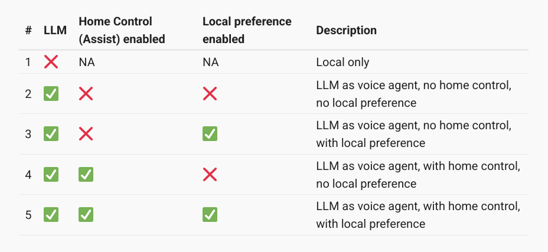
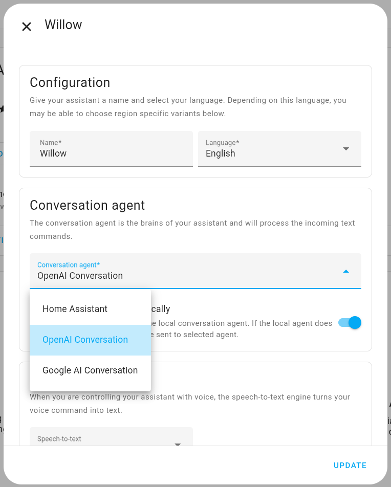
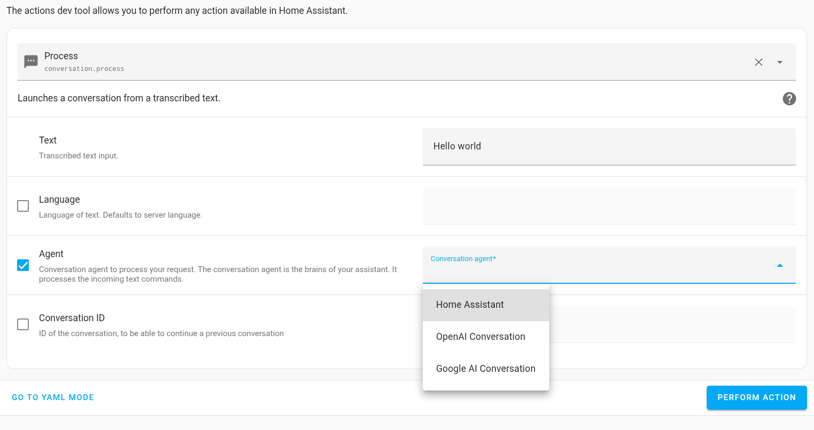
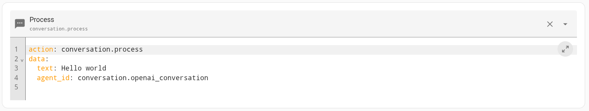

Working with LLMs
If you want to give your voice assistant a bit of personality you can add an LLM to Assist. This can open up a world of flexible commands.
Alexa, it's cold in here
OK, I've turned the heating on in the living room
And of course, silly jokes:
Alexa, why did the scarecrow win an award?
Because he was outstanding in his field
There are five pathways to using an LLM in Home Assistant (if you count not using one at all):

Broadly, there is a use case for custom sentences and intent scripts with options 1-3 and 5. If you have given the LLM complete control of Assist, with no local preference (option 4), custom sentences will rarely come into play - perhaps only when the internet goes down.
There are several approaches. Which you choose will depend on your priorities.
Make the LLM the default conversation agent, and enable local preference
If there is a custom or built-in sentence defined, Assist will use that, otherwise the LLM will take over.
Go to Settings | Voice Assistants and click on the name of your assistant. If the AI integration has been properly installed, a conversation agent should appear in the drop-down list.
You can define different assistants with different conversation agents and voices. If your system uses custom sentences, turning on the "Prefer handling commands locally" toggle ensures that the AI agent will only come into play if no sentence has been defined. (The switch is hidden if you are using the default Home Assistant agent.)

This is by far the simplest approach, but it does have some drawbacks:
-
There is no way to change the default conversation agent dynamically in an automation or script. You can change the whole assist pipeline, however.
-
There may be significant delays before responses, especially if they are long. (Google AI is particularly long-winded.)
-
All the entities you may want the LLM to control have to be exposed to Assist, with appropriate aliases. If there are a lot of them, this may also have an impact on response times. Best practice is only to expose the entities you actually need.
-
An AI agent may be unable to do some apparently simple things. OpenAI will not set timers or alarms, for example, and it will ignore any custom sentences you may have set up to do it, even if "Prefer handling commands locally" is on. Some voice assistant devices handle timers themselves, so this may not matter.
-
It may significantly increase costs. If you are paying for a high quality voice, usage will be much higher.
-
Unless you're using an ESPHome device, responses will be played through your voice assistant, which may not have the best quality speaker.
-
You have to be connected to the internet.
Do not allow the LLM to control Assist
If you do this, you will need to write custom sentences which call the LLM conversation agent specifically. Leave the conversation agent set to the default Home Assistant and in the LLM configuration untick the "Control Home Assistant" box.
-
Your voice assistants will use built-in and custom sentences, as they would without AI.
-
You can install several AI conversation agents and switch between them for different purposes by using different intent scripts.
-
Longer delays will still occur when you use AI agents, but you can include phrases like "Hang on a moment..." to make them more acceptable.
-
You will only have to expose entities to Assist if you expect to use them in built-in sentences. Intent scripts can access any Home Assistant entity. The LLM will only answer questions about the outside world.
-
Custom sentences to set timers will still work.
-
It is easier to control costs.
-
Responses can be played on any speaker.
Allow the LLM to control Assist, but do not make it the default conversation agent. Enable local preference
This is the middle ground. Again you will have to write specific intent scripts to make use of your LLM integration, but the values passed to the intent script will be interpreted more flexibly and it will be able to answer questions about your home.
-
The LLM will use entities exposed to Assist, and their aliases.
-
Intent scripts will still be able to reference other entities directly, using their entity IDs.
-
Custom sentences to set timers will still work.
-
Responses can be directed to any speaker.
Here is an example of a custom sentence/intent script designed to allow general purpose questions to be directed to OpenAI.
To use intent scripts you have to install the intent script integration.
Custom sentence
language: "en"
intents:
CustomOpenAI:
data:
- sentences:
- "(how [is] | how's | how are | how does | how do | how did | how will | how long ) {question}"
- "(why [is] | why's | why are | why does | why do | why did | why will) {question}"
- "(when [is] | when's | when are | when does | when do | when did | when will) {question}"
- "(what [is] | what's | what are | what does | what do | what did | what will) {question}"
- "(which [is] | which are | which does | which do | which did | which will) {question}"
- "(where [is] | where's | where are | where does | where do | where did | where will) {question}"
- "(who [is] | who's | who are | who does | who do | who did | who will) {question}"
- "(is | are) [there] {question}"
lists:
question:
wildcard: true
Intent
CustomOpenAI:
action:
- choose:
- conditions: "{{ is_state('binary_sensor.online', 'off') }}"
sequence:
- action: script.tts_response
data:
tts_sentence: "Sorry. There's no internet at the moment."
- conditions: "{{ is_state('binary_sensor.online', 'on') }}"
sequence:
- action: script.tts_response
data:
tts_sentence: "Hold on, I'll check with Open AI."
- action: conversation.process
data:
agent_id: conversation.openai_conversation
text: "{{ question }}"
response_variable: api_response
- variables:
answer: "{{ api_response.response.speech.plain.speech }}"
- action: script.tts_response
data:
tts_sentence: "{{ answer }}"
Notes
In the custom sentence...
{question} is a wildcard, so it could contain nonsense. If the AI conversation agent doesn't understand, it will say so, but it may also solemnly explain that the moon isn't made of green cheese.
In the intent...
The first choose condition allows a graceful exit if the internet is not available.
The second choose condition opens with a warning that there may be a delay.
The conversation.process action directs the {question} received from the custom sentence to the AI of your choice. If you don't know its agent_id you can find it by going to Developer Tools | Actions and selecting conversation.process, where you can pick the agent from a dropdown list.

If you then switch to yaml mode you can see its id.

response_variable will contain the whole API response. {{api_response.response.speech.plain.speech}} extracts the actual text of the reply.